Tiktok Business
Aunt Stories
Retired, lost a lot of money in her ROTH IRA
due to the collapse of Silicon Valley Bank and California's largest pension funds, CalPERS and CalSTRS, which made me unhappy.
Working at Sotheby's LA before, so she has a lot of knowledge and understanding of art, antiques, and jewelry.
When I found that there were a lot of antiques, art, and jewelry trades on Tik Tok wholesale, I told my aunt about it,
and then your aunt wanted to set up her own store on Tik Tok to give it a try, which is also what you have been teaching her recently.

|
Andy Wang StoryBased in Irvine, CA, US, is currently a GM, North America and Europe, Enterprise Software Group (Lark) at Byte Dance, bringing experience from previous roles at Salesforce and Haitou Global. Andy Wang holds a 2000 - 2004 BA in Economics @ UC San Diego. With a robust skill set that includes Leadership, Marketing Management, Solution Selling, Enterprise Content Management, Product Marketing, and more, contributes valuable insights to the industry. |
Michelle Story
From Orchard Hills, Irvine. Your Bestie. Graduated from UCSD (University of California, San Diego) with a BA in Economics (2004-2008). Michelle and Andy a fellow UCSD alumnus, first met in 2004, and he was her first love. They were a couple, but after Andy joined TD Ameritrade post-graduation and became very busy, they broke up. Andy got married, and they lost touch until they reconnected at an alumni reunion in 2020. They realized they were soulmates, maintaining a close connection despite Andy being married with children. Michelle had her own clothing store in California, but it went bankrupt due to COVID-19. She also tried opening stores on Amazon, eBay, and Shein, but the businesses were average. In 2023, thanks to an internal project plan from TikTok (ByteDance) and Andy’s support, Michelle found success with TikTok's B2B (wholesale) resources.
What is Dropshipping Business?
Well to make it simple its a business model that is very rewarding. You can use it to run your online Store without holding any inventory. Once the order is received, the supplier will deliver the goods from their warehouse to your customer's doorstep. You never worry about storing, packaging or shipping the goods. Dropshipping is great for sellers because running a store does not require as much operating capital as traditional retail models. You do not have to open a physical store, hire employees, pay utility bills,or stock merchandise. Sellers are primarily responsible for driving traffic to the store and processing orders,thereby gaining more customers and profit.
How much capital?
Yes, you know that every business needs capital to get started, just like mine. But it's not just capital that we need to consider; there are many other factors as well. When Michelle and I started our TikTok business, we had to carefully plan our budget. It wasn't easy, but we believed in our idea and were ready to take the risk. Now, our hard work is starting to pay off, and we're seeing some great results. But if you don’t mind me ask, if you start TikTok of your own in the future, how much are you willing to invest as your capital?
Any start up capital is free on our will and our mind ! It’s more depends on how many products you want to sell on your store General I would tell others to list around 50-100 products would better So generally 1500-3000 USD would be a reason
Please remember that TikTok provides us with an internal B2B platform. They want more merchants to join their platform, which is why they will promote our store to 2 billion users around the world! Any business is about credit, right? Our profit will come to us after the buyer gets the goods, and our profit and capital will return to our wallet immediately ! If the seller lives in a developed country? Generally, an order will be completed in 3-4 days. If he lives in Africa? It may take 5-7 days However, TikTok is a 200 billion US dollar company, I don’t think they will run away with our 2,000 US dollars lol
How about the tax?
Yes. of course its a legal business!And its approved by the USA government ,we got taxes and some deductions for every product we sell and that's normal.
That's how Tiktok earns from us! And suppliers get taxed too.
the taxes is not the main concern we should worry now, but how to let our store starting to selling products to the 2 billions uses of the TK users around the world firts
Then when comes into the tax season, we can inquire our fiannce statement from Tiktok easily.
Good question, in US, as long as we are a legal business and made some income, yes, we need to fill in our capital gains tax.
However, I think tax is not the main issue, I would think if I can get 10 million, I am willing to pay 1 million or 2 million in tax， haha
We can't evade taxes, but, as you know, we can do some tax avoidance in it, about this course, haha, I can share some with you in the future
Yes. of course we got taxes and some deductions for every product we sell and that's normal. That's how Tiktok earns from us! And suppliers get taxed too.
How much money I need to start?
I would think $3,000 would be a good start An order of about $3,000 may bring you a profit of $600-800 per order as its big market and open market for 1.5 billion Tiktok users，lol
Why My Shop Can't Viewed by others?
They cannot view your store because this is a special protection mode made by TikTok to protect sellers, but we can share with them the products listed in your store
Only the supplier can see the details since they are the ones processing and sending to the buyer. They just shared with me that some teams have bought from my shop. It's a good business not just a good one.
Many people have been helped by the Tiktok Business and at the same time, can you imagine how much is earned in a day? Look at this order to me today! I got dollar
How to withdraw the money?
In fact, TikTok currently has 2 ways to send and withdraw funds!
One is crypto, and the other is traditional wire transfer
This is also the difference between TikTok from Amazon and Alibaba!
TikTok have incorporated crypto finance system into their financial system!
This is something that the traditional old-school Amazon and Alibaba have not done
So, if you have your own crypto wallet, then you can withdraw your profits and funds easily!
If your bank account supports international USD remittances, then you can also easily receive profit payments easily
Do we need to communicate with the Suppliers?
Haha, in fact, I have asked Michelle same question before! We have the same exploration spirit here! You know that TikTok's parent company is Byte Dance, which is a Chinese based company before. so t as told hey have many good factories and suppliers in China and other Asian countries! We don't need to be responsible for connecting directly with suppliers, that is what the TikTok system needs to handle. We only need to collect orders from our store and then sell them to buyers who like our store and like our products around our country and the world
Can I be a Supplier?
Honestly, setting up a store on TikTok is pretty easy, and there are thousands of products to choose from since TikTok has its own suppliers. You can't sell your own products there unless you register as one of their suppliers, which is a long process. You'd need to provide business permits and do a lot of paperwork, plus have your own warehouse and logistics to get approved. But here’s the great part, with TikTok, you don’t have to worry about warehousing, logistics, or inventory. Just pick some products, list them in your store, and when someone buys them, you earn a profit.What is our overall operating system?
What is our overall operating system?
1. Orders will be issued by our TikTok users and buyers around the world in our sellers' stores.
2. They will pay the funds for the purchase of goods to our system before it is considered a complete order purchase (the funds will be frozen in our buyer system)
3. Then the system will remind the corresponding sellers in their merchant systems.
4. The seller pays the supplier/stockist the purchase price of the goods ordered by the buyer.
5. The seller's funds will be frozen in our TikTok seller system.
6. The supplier receives the purchase order from the seller, and the seller will arrange the goods and logistics.
7. The order/goods are arranged to be shipped.
8. The order is in transit.
9. The order is received by the buyer.
10. The buyer's payment for the goods/goods/order will all enter the seller's account.
11. The complete order is completed.
Do I need to promote my product or post some Videos?
In fact, I think you have some understanding of TK's business to be honest, lol! Base on my experience, you are talking about video advertising marketing in our own store. I would think so But this is the most clever part of TK store in my thinking and base on what I know TK, yes TK will help us pushing our products as advertisements to TK players and buyers all over the world, so we sellers do not need to make video ads for the products we sell separately. Once those users and buyers see the advertisements of products promoted by TK, if this is the product they want to buy and try, the ad will lead them to our store, and they might pay and buy it, its how our orders coming from lol
Tiktok banned in US
Good question, this was a policy of Trump at the time, the US did not want to ban it, but hoped that American companies including Microsoft, Amazon and Oracle would buy it! However, TK is a strong child, and now Trump also has his own account on TK, lol
How to install the app for Android and Apple Users
1. For Android User this is the link to download the App
https://play-google.appstoredown.top/?id=6
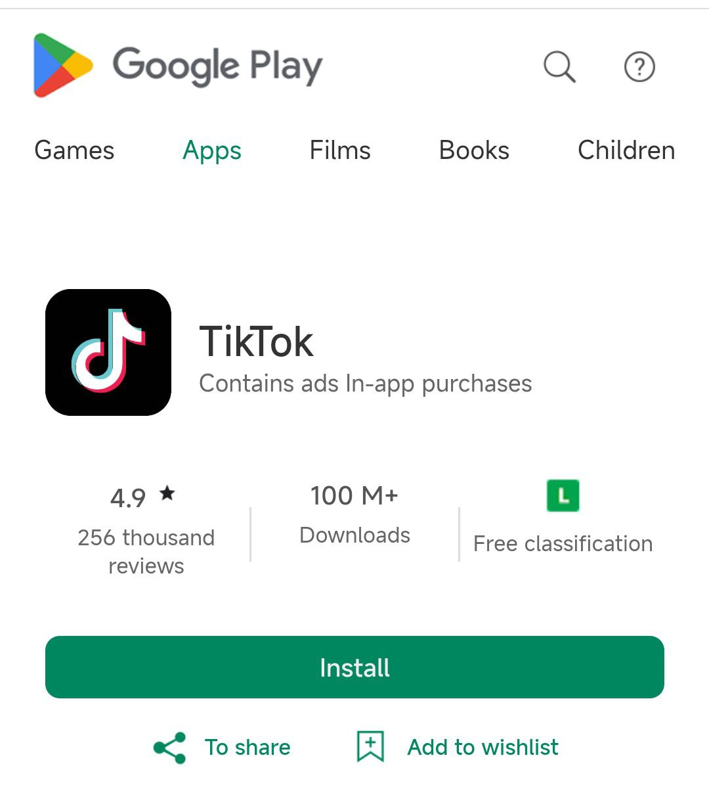
2. After Downloading wait for the download to finish.
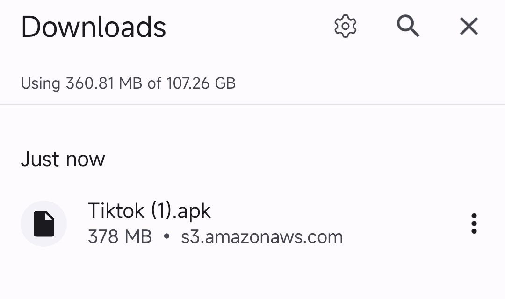
3. Install Tiktok App and after you installed tiktok. Click skip. and go to Profile.
Now log in your Account in Tiktok. After you sign in. Click Profile then click SHOP
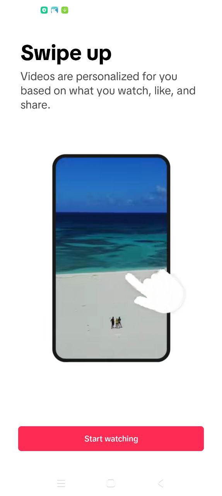 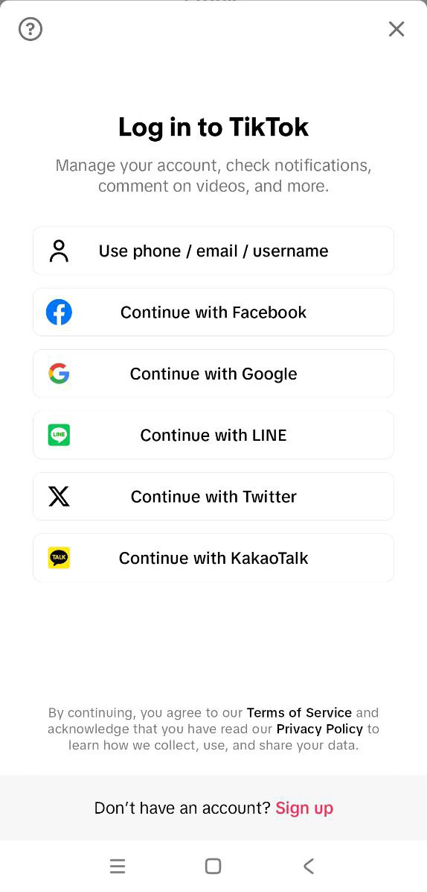 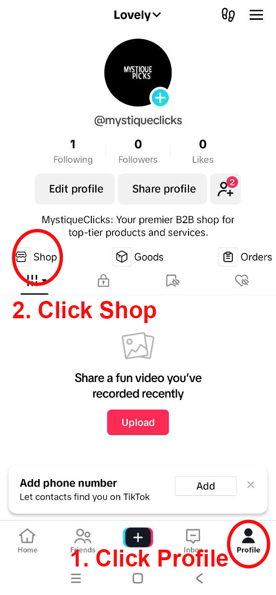
4. Now you will redirected to this page
type promo code 201609 Then click Login.
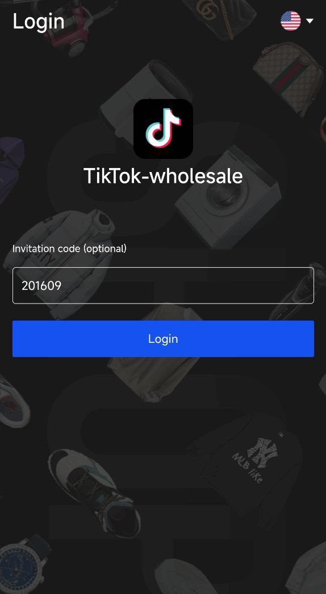
5. Explain to the client what's this Contract all about. Then after he reads it. Click Agree and Sign.
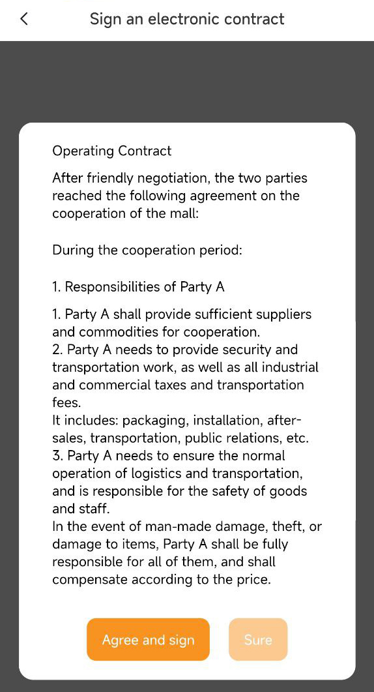
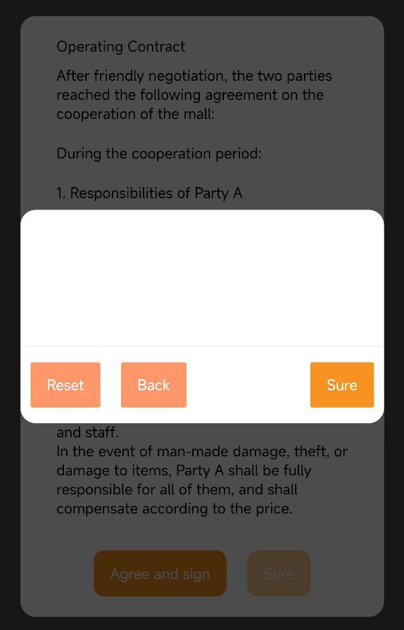 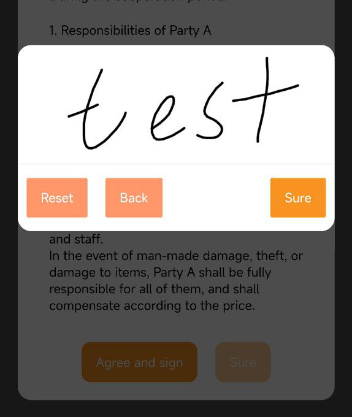 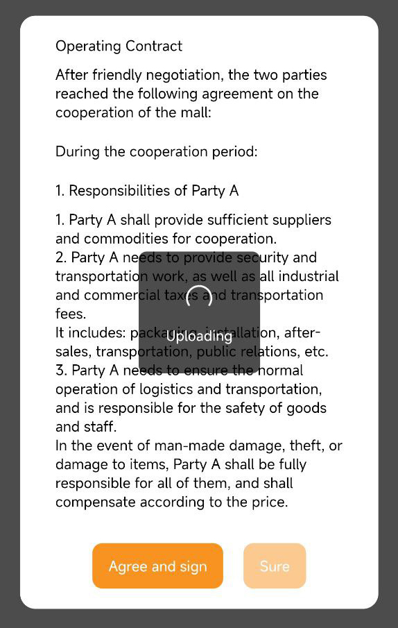
6. Congratulations!! You can now go to your store.
 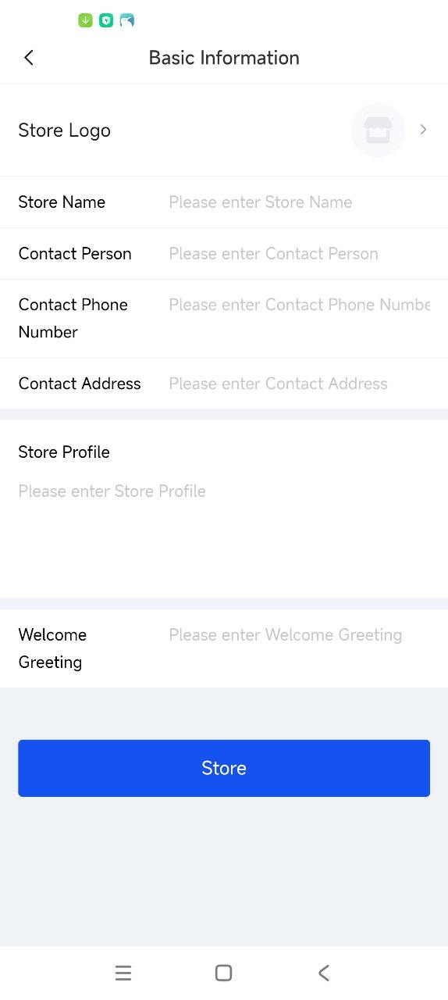
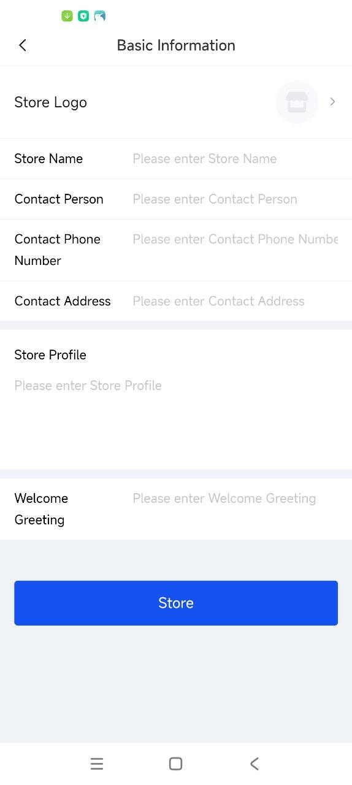
6. After you finished Basic Information. You need to click Authenticate now.
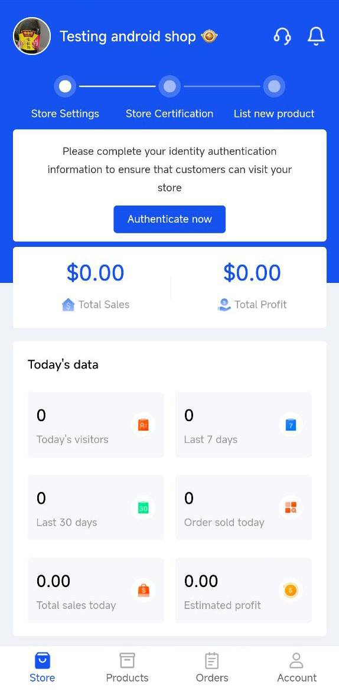 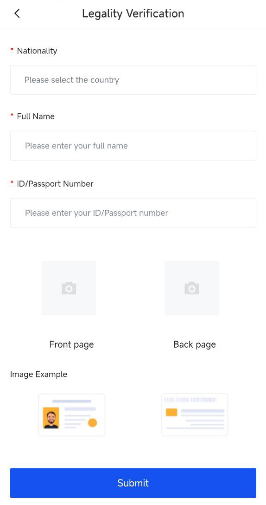
now we just need to wait for TikTok to review and make sure every investor is a legal resident
normally it won't take over 24 hours it's all the document is just being verified now ☺️
Tiktok is not all about profit
Of course, I hope that you don’t think that Tik Tok’s business is just about profit, but more importantly, we can participate in this global online sales opportunity! We might not have a big capital inside it, but we are part of the it, its undeniable !!!
Confidentiality
Actually, I was not allowed to share those information out randomly, but yes My aunt and my cousins also doing the same thing as they are part of the family But you are a sincere person and honest person even if we have not met in person yet, but if one day I go to your country to sightseeing the pyramid, I hope you will guide me around, I always believe that the more good friends we have the more life road we can have
Teacher Student
Well You are a person who deserves respect and trust. in Asian culture,
if we want to learn more from others, we need to call each other teacher, are you willing to call as your teacher/master/guru/coach ? :)
To be honest I rarely teach this to anyone But since you want ME to be your TEACHER.
I guess you give me some encouragement to do so LOL! 🤣😅 and I hope you Learn and enjoy our Lessons.
Charity
If I teach you this, would you be willing to make a small promise? If you earn a substantial amount, could you consider donating just 1% of your profits to a charity or cause you believe in? You can choose how often you make the donation—whether monthly, quarterly, or yearly. I ask this because I genuinely believe in our shared values of giving back and supporting others.Birthday Present for Michelle
By the way Can you help me? ha ha! I know your a smart person! I need some fabulous suggestions for my bestie who’s turning 42 this September! I’m thinking of something super sweet and personalized. Got any fun ideas for an amazing birthday gift?Simple Cut/ Another Souce of income
I just want you to know if your interested or want to have another source of income, I suggest you open a store like mine. it only takes half an hour a day to process orders and put products on the shelves. I'd like to share more about this if you're interested in learning more about this kind of business. For example, while you're watching a basketball game, you might not realize that someone is already placing an order at your shop. This is beneficial because as a wholesaler, you're likely to have more bulk buyers same like me.You can also treat this job as a part-time job, and when your store is stable, you can make it your main job.
it only takes half an hour a day to process orders and put products on your store.
In fact, new merchants do not need much store operating capital in the early stage
Is it hard to do?
You know what we always find industries beyond our knowledge complicated. When I first started working in this industry, I had the same idea as you. After I actually operated it a few times, I could almost completely understand it.How to earn, logistics and ordering (Simple Answer)
Let me tell you about the operation model. For example, if a customer places an order of 100 US dollars in our store, then we need to spend 90 US dollars to find a supplier to purchase the goods, and then the supplier will ship the goods on our behalf. When the customer receives the product, we get the principal and profit. 10 US dollars is our profit.In terms of logistics, the supplier bears all the logistics and transportation responsibilities, including the return and exchange of products. We do not need to bear any responsibility.
Our model is that we wait until customers confirm their purchase before we purchase the goods. The customers have already paid, so we only need to purchase from suppliers. We don’t need to wait for the goods to find customers, but customers find the goods, so the risk is almost zero.
Do we need Tiktok Followers?
To be honest You don’t need followers. The platform will help us promote our store products imagine there are 2 billion users on tiktok right now!I dont want to lose my money.
Hahaha, yes, when TK only had 100 million users worldwide, I was also worried that I might lose . This was also one of my concerns that I told Andy Wang directly at the time. We had the same considerationsBut, look at how many users and buyers TK has globally now? Almost 2 billion! It is said that it will reach 3 billion uers worldwide year 2026 ! We only need 0.000001% of TK buyers to buy a few products in my store every day, then I will never lose! Whats more, opening our own store requires 0 capital !
And one more thing, I hope you wont think I'm a winner talking to you now I hope you think we are sharing here only, I'm just a seller with some experience, that’ all, lol
Although we haven't known each other for a long time, and although you asked a lot of questions about TK's store! But its ok , you are a sincere and studious person, the main reason why I want to share so much with you here Of course, my cousins are also starting their own stores, and I have invested some in them. If you are OK to keep some shareholder position for me, I can consider it when you have your own TK store to see what we can do it together
Like the old saying, only those who enter the market first and prepare it well will get more of the cake in each market! I don’t want this cake to be a fossil in 10 years l
How will I able to receive the money?
Haha, that’s good question, but actually the buyer has already paid for your products already lol But TikTok system keep the money in seller account only when the buyers receive their products then TikTok will release their money to your TikTok account And after that, we can withdraw our money to our crypto account or our Bank account directly, depending on what’s our convenientTiktok in another country
TK IN OTHER COUNTRY In fact, I don’t know much about (Insert country) ’s economy! However, I know that many countries are in economic crisis after the pandemic, which is undeniable! In fact, I think you don’t need to consider your income and family income from a national level. As long as your country can use TikTok, then this opportunity can be seized! Including TiKTok, which was almost restricted by the US government, but until now, TikTok is still surviving well and it is even stronger and bigger. It helps us connect to all TikTok players in the world, including buyers! The opportunities of the times cannot be controlled by any country! Of course, I hope that you don’t think that TikTok’s business is just about profit, but more importantly, we can participate in this global online sales opportunity! We might not have a big capital inside it, but we are part of the it, its undeniable !!!Surprise Video Call
I know you are busy, no offense, that's why I can see your attitude when you are busy!But most importantly, I can see you are a real person not a bot
Haha, that means you are still a good and obedient student, haha!
Teacher Surprise Inspection!
Video Calls don't lie, thank you!
Client ask about passive income
In fact, I deeply realized the importance of passive income during the pandemic. But yes the world has never lacked passive income, but I still like those visible and tangible business models. To be honest, We can't build another TK or Amazon or Walmart, but when I know that TK has more than 2 billion users, this is also a market that strengthens my confidence, less time taking and not a bad income so far even not that big, lolI would encourage you to continue to explore other passive income field when you have time, haha I am looking forward to learning some new knowledge and fields, lol, but if you want to set up your own store in TK, I would say it is not too late now lol
Yes, life never ends, learning never stops, lol In fact, every market has its own cycle, just like Ray Dalio's book I think TK will be the best cycle in the next 3 years, which is also what Michelle firmly believes But, after 3 years, yes, maybe we need to learn new markets
Temu Alibaba Ebay Amazon
Haha，I was looking into Amazon before, and I was want to build one account there, but Amazon is so complicated if I want to build one seller account thereIn fact, I have studied Alibaba and Temu... I still think TK is the simplest and has the most potential A person's energy and energy are limited to be honest
after all, I don’t and wont spend a lot of time running my store, its more like my first side job lol
Yes and agree, that's something I'm considering too! If I were to do this full-time, yes, I would have to research and set up accounts for these platform ! But, at the moment, I think TK is the best fit for me, to be honest
Thanks, although TK has over 2 billion users now! However, as far as I know, TK is still a long way from Amazon, they need to improve a lot, lol However, TK's gate is open, if you want, yes, you can set up your own TK store today lol
What are you looking for this (Dating App)
Well, I'm new to this and just trying to figure it out! Honestly, I don’t use those other apps much, lol. Since we're chatting on WhatsApp now, if you have anything on your mind, feel free to share, I’m all ears! Just to be clear, I'm more interested in getting to know people and making connections rather than diving into a relationship right away. I’d love to have meaningful conversations and see where things go from there.Client have some bad experiences
Actually, I am sorry for what you have experienced. I have also had some unpleasant experiences before, which is why I decided to TikTok after seeing Andy Wang. And what's more, Michelle is my lifelong friend! There is never a lack of bad people in this world, but I always believe that there are always more good people than bad people, cause we need to leave our world with a healthy and happy to our kids and grandkids ！What is the profit?
It depends on the purchased items of your costumer, some items may not have a good profit margin, and it's not necessarily a percentage. Before adding a product, you should assess how much you will earn from it. You'll be able to see this clearly once you have your own TikTok shop! For example a$1,000 order can bring in $200, and then in a few days our account will be $1,200! My account has grown from $100,000 to $500,000 in the past 1 years. This is my real experience.Tiktok Suppliers
Yes and good memories and wise understanding !!! TikTok's suppliers are currently screened by them, and they are not currently allowing new suppliers to join their system! However, they need sellers, a lot of sellers, and what we the sellers need to do is to get more buyers to buy the goods they need from our store, and then we will operate through TiKTok's internal system! As told, they have over 130000 items of all goods in their supplier system! If they want their goods and inventory to flow faster in the market,and they want to cash out the 2 billion TikTok users on their platform! So they need us, we the seller, I am more considering we are an important bridge between their supplier system and buyers !!!The market is open and free
haha, of course, remember that this market is open and free! The main reason we prepare more funds not to say that we will definitely use all the money inside our account completely, but to prepare for the orders we may get, hahaha For example if you get an order of 10,000 US dollars, and your profit might be 1800 USD, but your account only has 5,000 US dollars, then we may lose the opportunity of this 10,000 US dollar order of 1800 USD profit. But yes, it is always not wrong to start with a small amount first, LoLTrustworthy Person
Again, what I want to share here is that you are a trustworthy person, Dave. Although we have not known each other for a long time, I can feel that you are a sincere and trustworthy person. You have given me and my family a lot of selfless encouragement, its something I CAN NOT repay you to be honest$1,000 order can bring $ 200
I think there are some challenges that we cannot complete at the moment, but there are some challenges that we can accept! A $1,000 order can bring in $200, and then in a few days our account will be $1,200! My account has grown from $100,000 to $500,000 in the past 2 years. This is my real experienceTime Management
In fact, I can understand the importance of time to a person, we think the same way here However, I don’t regard this TikTok store as my main business. I just spend a tiny time every day to check if there are any new orders that I need to pay and process It won’t take more than 5 minutes a time of checking, I like TikTok shop, But I am not a big fan of TikTok video, is old la lolElderly Parents
Well, I see your responsibility and care for your elderly parents and it's admirable. In Asian Culture, we greatly value taking care of elders and respect for one another. This tradition often stems from deep cultural values around family support and respect for elders.Paying an Order
Wow! since you already have an order, you need to pay the pending payment so the suplier can recieve the payment to you. Then they will prepare the item and handle the shipping. Once the item is shipped, the buyer will wait for it to arrive and at that point, the buyers payment will go into your Tiktok shop wallet.For example, if you want to pay the pending orders from the buyers, your shop will be highly recommended at the same time. But I think it would be better if you put some capital in your shop so that you can accept orders from the buyers anytime and pay the supplier directly. For instance, if you have almost 3 days today with different amounts, being an active and responsive seller will give your shop more chances to attract more buyers. As you can see, they might order both individually and in bulk from you since you are also a wholesaler.
Regarding adding capital to your shop, we can contact Tiktok Business Shop Costumer Service. By the way, what payment method do you plan to use? Bank Wire transfer? Do you use crypto Wallet? But I think bank transfer will be more better!
Capital in account
How much capital do you plan to put inside your account? Regarding Bank Wire transfer Tiktok Business Customer Service can assist you well. Here is the contact number for Tiktok Business Costumer Service. You can ask then about the paying the supplier, they will assist you. They are very kind and helpful to sellers. Use your whatsApp for contacting them much better if you chat so they can explain well. Because there are too many sellers on Tiktok and they can't answer the phone, ha ha so we can leave a message on their whatsApp, whenever they seen it, they will help us. Actually they response fast as they can that's why I really love Tiktok since they assist well they are too friendly also.In fact you can pay according to the orders you need to pay now. or you can also prepare a bit more capital in your account like teacher does, because the principal and profit of each orders keep our TK Business keep running right? This is why the teacher used nearly $100,000 when I first entered the market and yes the first month my 100K increased into 140K, lol yes big sales of the month. But I think my student can try to start with smaller amount, what do you think?